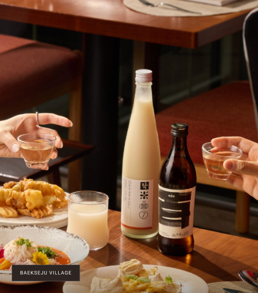

본문콘텐츠영역
「국순당」은 술을 빚기 전에 먼저 사람을 생각합니다
누룩을 의미하는 '국(麴)'과 좋은 술을 빚는 집이라는 '순당(醇堂)'이 만나 국순당이 되었습니다.
자연의 이치를 거스르지 않고, 우리 땅에서 자란 좋은 재료만을 고집하며
건강하고 바른 술 문화를 만들어가는 것, 그것이 우리의 철학입니다.
- 1970연구소 설립
- 24종복원한 전통주
- 2008~복원 사업 지속
ORIGIN
한 해의 볕과 물이
한 잔의 술이 됩니다
우리 땅에서 자란 쌀과 우리 누룩으로만 빚습니다.
-
1970
한국미생물공업연구소 설립
-
1992
(주)국순당 출범 · 백세주 출시
-
2008
우리술 복원 사업 시작
-
2010
환경부 지정 녹색기업 선정
-
2012
우리술 복원 20종 달성
-
현재
우리술 복원 사업 지속
잊혀 가는 우리술을
되살립니다
'법고창신(法古創新)'의 정신으로 옛 문헌 속 제법을 철저히 고증하고,
현대의 기술을 더해 단절된 우리술의 맥을 잇는 복원 사업을 지속하고 있습니다.
끊긴 자리에서부터 다시 빚기 시작했습니다
우리술 복원의 의미→-
01
- 문헌 고증
- 고문헌에 기록된 양조 제법을
철저하게 분석합니다.
-
02
- 재료 재현
- 당시 사용되었던 원료를
찾아내어 재현합니다.
-
03
- 시험 양조
- 수십 번의 양조 과정을 통해
최적의 배합을 찾습니다.
-
04
- 관능 검증
- 철저한 검증을 거쳐
현대적 입맛에 맞게 완성합니다.
사라진 술을 되살리는 일은 우리 문화의 한 부분을 복원하는 일입니다.
국순당이 복원한 우리술 24종
- 창포주
- 자주
- 이화주
- 신도주
- 송절주
- 소곡주
- 동정춘
- 약산춘
- 미림주
- 상심주
- 쌀 머루주
- 진맥소주
- 부의주
- 백하주
- 석탄향
- 한산춘
- 송화천로주
- 청감주
- 사시통음주
- 신선고본주
- 유하주
- 삼합주
- 불술
- 옥수수술
- 창포주
- 자주
- 이화주
- 신도주
- 송절주
- 소곡주
- 동정춘
- 약산춘
- 미림주
- 상심주
- 쌀 머루주
- 진맥소주
- 부의주
- 백하주
- 석탄향
- 한산춘
- 송화천로주
- 청감주
- 사시통음주
- 신선고본주
- 유하주
- 삼합주
- 불술
- 옥수수술

술은 상에 오를 때
비로소 완성됩니다
전통주와 가장 잘 어울리는 우리 음식을 함께 즐길 수 있는 공간.
백세주마을에서 국순당이 제안하는 완벽한 마리아주를 경험해 보세요.
-
campaign
PR CENTER
홍보센터
국순당의 최신 소식과 다양한 미디어 자료를 확인하세요.
arrow_outward 홍보센터 바로가기 -
person_add
CAREERS
채용안내
전통을 잇고 미래를 열어갈 인재를 기다립니다.
arrow_outward 채용안내 바로가기